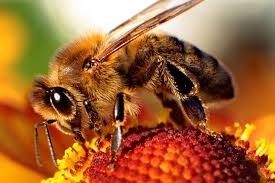
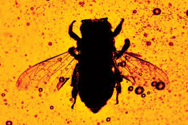
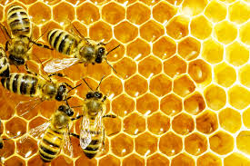
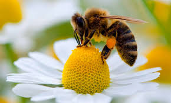
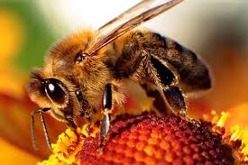
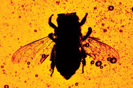
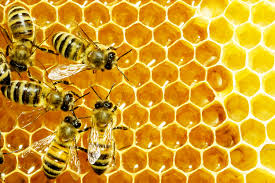
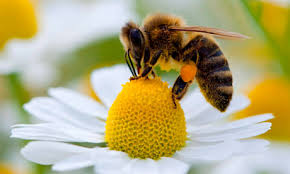
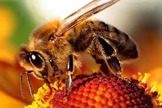
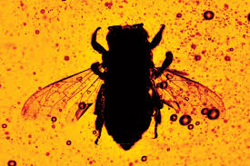
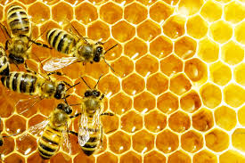
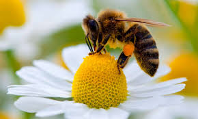
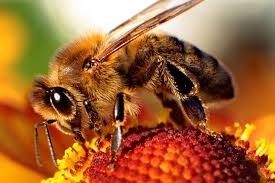
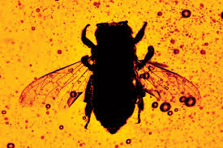
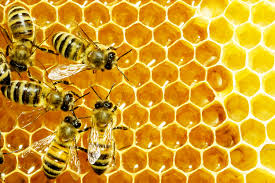
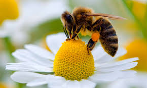
Bees are flying insects closely related to wasps and ants
Bees are a monophyletic lineage within the superfamily Apoidea and
are presently considered a clade, called Anthophila. There are nearly 20,000 known
species of bees in seven recognized biological families.They are found on
every continent except Antarctica, in every habitat on the planet that
contains insect-pollinated flowering plants.
insects actually make it possible for many of your favorite foods
to reach your table. From apples to almonds to the pumpkin in our
pumpkin pies, we have bees to thank. They transfer pollen and seeds from one
flower to another, fertilizing the plant so it can grow and produce food.
Cross-pollination helps at least 30 percent of the world's crops and 90
percent of our wild plants to thrive.They are responsible for much of the
food on your plate. Bees perform a task that is vital to the survival
of agriculture: pollination. In fact, one third of our global
food supply is pollinated by bees.
To put this into context, these are many of the crops pollinated
by bees: Almonds, apples, apricots, avocados, blueberries, cantaloupes,
cashews, coffee, cranberries, cucumbers, eggplants, grapes, kiwis,
mangoes, okra, peaches, pears, peppers, strawberries, tangerines,
walnuts and watermelons.Without bees, these crops would cease
to exist. Bees are crucial to our existence as well,
thus we must work harder to protect and preserve them.